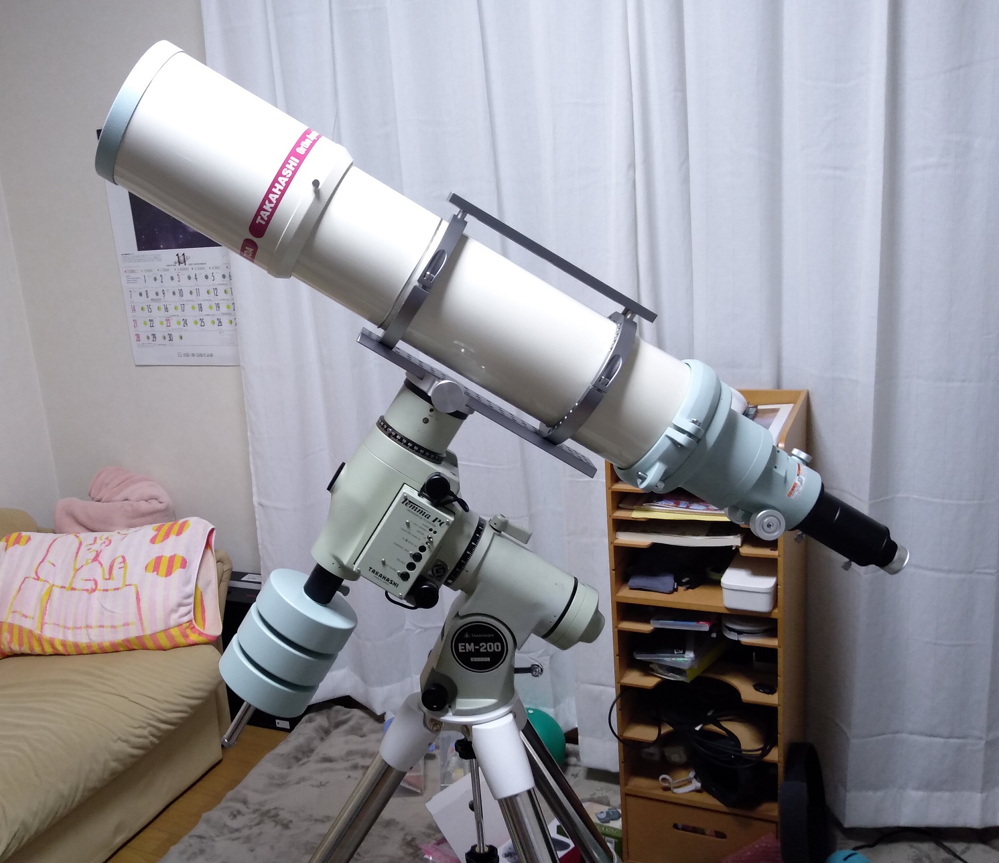
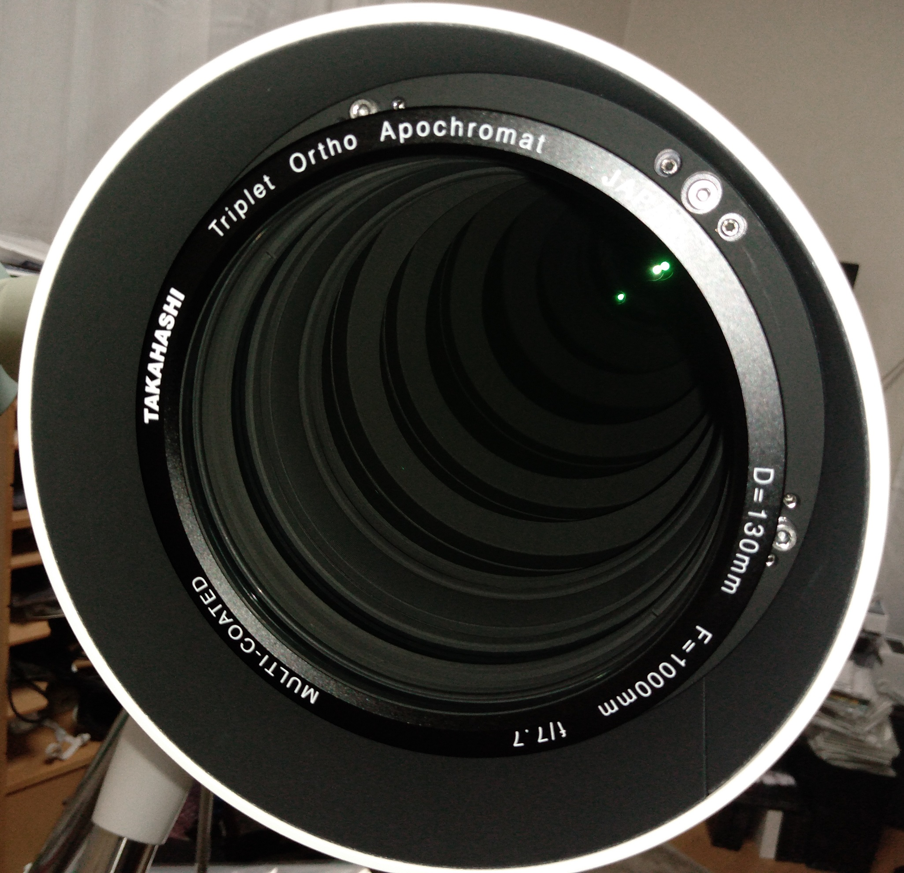

<!DOCTYPE html>
<html>

<head><meta name="generator" content="Hexo 3.8.0">
  <meta charset="utf-8">
  
    <title>
      
        【やってしまった！】TOA-130NS 導入の裏？話 | 
            ほしよみ大学生のブログ
    </title>
    <meta name="viewport" content="width=device-width">
    <meta name="description" content="あいさつこんにちは、書きたい遠征記など色々溜まってはいるのですが，この度なんと TOA を導入してしまったので，先にご報告として書いておきます．">
<meta name="keywords" content="機材,鏡筒">
<meta property="og:type" content="article">
<meta property="og:title" content="【やってしまった！】TOA-130NS 導入の裏？話">
<meta property="og:url" content="http://dabokun.github.io/2021/11/10/00000059-toa130ns/index.html">
<meta property="og:site_name" content="ほしよみ大学生のブログ">
<meta property="og:description" content="あいさつこんにちは、書きたい遠征記など色々溜まってはいるのですが，この度なんと TOA を導入してしまったので，先にご報告として書いておきます．">
<meta property="og:locale" content="ja">
<meta property="og:image" content="http://dabokun.github.io/2021/11/10/00000059-toa130ns/card.jpg">
<meta property="og:updated_time" content="2021-11-10T15:04:45.975Z">
<meta name="twitter:card" content="summary_large_image">
<meta name="twitter:title" content="【やってしまった！】TOA-130NS 導入の裏？話">
<meta name="twitter:description" content="あいさつこんにちは、書きたい遠征記など色々溜まってはいるのですが，この度なんと TOA を導入してしまったので，先にご報告として書いておきます．">
<meta name="twitter:image" content="http://dabokun.github.io/2021/11/10/00000059-toa130ns/card.jpg">
<meta name="twitter:creator" content="@dabo_pic">
      
        <link rel="alternative" href="/atom.xml" title="ほしよみ大学生のブログ" type="application/atom+xml">
        
          
            <link rel="icon" href="/images/favicon.png">
            
              <link rel="stylesheet" href="/css/style.css">
                <!--[if lt IE 9]><script src="//html5shiv.googlecode.com/svn/trunk/html5.js"></script><![endif]-->
                
                  <script data-ad-client="ca-pub-1350688970555904" async src="https://pagead2.googlesyndication.com/pagead/js/adsbygoogle.js"></script>
</head></html>
<body>
  <div id="container">
    <div class="mobile-nav-panel">
	<i class="icon-reorder icon-large"></i>
</div>
<header id="header">
	<h1 class="blog-title">
		<a href="/">ほしよみ大学生のブログ</a>
	</h1>
	<nav class="nav">
		<ul>
			<li><a href="/">Home</a></li><li><a href="/categories">Categories</a></li><li><a href="/tags">Tags</a></li><li><a href="/archives">Archives</a></li><li><a href="/about">About</a></li><li><a href="/work">Work</a></li>
			<li><a id="nav-search-btn" class="nav-icon" title="Search"></a></li>
			<li><a href="https://github.com/dabokun"></a>
			</li>
			<li><a href="https://twitter.com/dabo_pic"></a></li>
			<li><a href="/atom.xml" id="nav-rss-link" class="nav-icon" title="RSS Feed"></a>
			</li>
		</ul>
	</nav>
	<div id="search-form-wrap">
		<form action="//google.com/search" method="get" accept-charset="UTF-8" class="search-form"><input type="search" name="q" class="search-form-input" placeholder="Search"><button type="submit" class="search-form-submit">&#xF002;</button><input type="hidden" name="sitesearch" value="http://dabokun.github.io"></form>
	</div>
</header>
    <div id="main">
      <article id="post-00000059-toa130ns" class="post">
	<footer class="entry-meta-header">
		<span class="meta-elements date">
			<a href="/2021/11/10/00000059-toa130ns/" class="article-date">
  <time datetime="2021-11-10T14:22:54.000Z" itemprop="datePublished">2021-11-10</time>
</a>
		</span>
		<span class="meta-elements author">astr0dab0</span>
		<div class="commentscount">
			
			<a href="http://dabokun.github.io/2021/11/10/00000059-toa130ns/#disqus_thread" class="article-comment-link">Comments</a>
			
		</div>
	</footer>
	
	<header class="entry-header">
		
  
    <h1 class="article-title entry-title" itemprop="name">
      【やってしまった！】TOA-130NS 導入の裏？話
    </h1>
  

	</header>
	<div class="entry-content">
		
		
		<div id="toc" class="toc-article">
			<p class="toc-title">目次</p>
			<ol class="toc"><li class="toc-item toc-level-3"><a class="toc-link" href="#あいさつ"><span class="toc-number">1.</span> <span class="toc-text">あいさつ</span></a></li><li class="toc-item toc-level-3"><a class="toc-link" href="#動画で報告"><span class="toc-number">2.</span> <span class="toc-text">動画で報告</span></a></li></ol>
		</div>
		
		<h3 id="あいさつ"><a href="#あいさつ" class="headerlink" title="あいさつ"></a>あいさつ</h3><p>こんにちは、書きたい遠征記など色々溜まってはいるのですが，この度なんと TOA を導入してしまったので，先にご報告として書いておきます．</p>
<a id="more"></a>
<h3 id="動画で報告"><a href="#動画で報告" class="headerlink" title="動画で報告"></a>動画で報告</h3><p>あいさつから動画一発目が開封動画ですまない…という感じなのですが，一生に一度あるかないかの大物！ということで動画にしました．</p>
<div class="video-container"><iframe src="//www.youtube.com/embed/QHfbwZOFI2Y" frameborder="0" allowfullscreen></iframe></div>
<p>動画でも述べていますが，バンドは純正ではなく MoreBlue さんの 156mm に（現在リンクが見当たりません），<a href="http://www.moreblue.co.jp/shopdetail/000000000599/" target="_blank" rel="noopener">ロスマンディ規格のドデカいアリガタ</a>で，<a href="https://www.starbase.co.jp/SHOP/SB-A135.html" target="_blank" rel="noopener">赤道儀側にこれまたデカいアリミゾ</a>を利用しています．重心が赤道儀側に下がるばかりでなく，鏡筒上側にスペーサーを挟んでトッププレートを入れることで，頑張れば片手でも持てるようになります．<br>試しに乗せてみましたが，筋力のない自分でもそれなりに楽に乗せることができました．</p>
<p><br><br>かっこいい…</p>
<p>アイピースも TAK3.3-UW に NAV7-SW と，抜かりない感じにできたのではないかと思います．本気で眼視やりてー！という意気込みです．<br><a href="/2020/08/22/00000037-2020-08-hoshinomura/">昨年8月に TOA で色々見させてもらった</a>時から（あの時は双眼でしたけど笑）ずっと，いつか手にすることは心のなかで決めていたので，まさかこんな早いとは思いませんでしたが，入手できて良かったと思います．<br>天文人口分布の中ではまだギリ（？）若手であろうという自負はありますので，まだ目が衰えないうちにこれでたくさんの天体を見て知り，マニアックな天体の撮影にも繋げていくことで充実した天文ライフを送れればいいかなと勝手に思っています。</p>
<p>小海で開催される星と自然のフェスタは現状晴れそうなので行こうと思います．ここで月などを眺めるのが TOA のファーストライトになるかと思います．アイドリング禁止がつらいので夜間は会場とは別の場所に移動するかもしれませんが，知り合いやはじめましての方にお会いできるのも含め，今からとても楽しみです～</p>
<p>ではでは！</p>

		
	</div>
	<footer class="article-footer">
		<a href="https://twitter.com/intent/tweet?text=%E3%80%90%E3%82%84%E3%81%A3%E3%81%A6%E3%81%97%E3%81%BE%E3%81%A3%E3%81%9F%EF%BC%81%E3%80%91TOA-130NS%20%E5%B0%8E%E5%85%A5%E3%81%AE%E8%A3%8F%EF%BC%9F%E8%A9%B1｜%E3%81%BB%E3%81%97%E3%82%88%E3%81%BF%E5%A4%A7%E5%AD%A6%E7%94%9F%E3%81%AE%E3%83%96%E3%83%AD%E3%82%B0&url=http://dabokun.github.io/2021/11/10/00000059-toa130ns/" class="twitter-share-button" target="_blank" title="Twitter"></a>
		<script async src="https://platform.twitter.com/widgets.js" charset="utf-8"></script>

		<div id="fb-root"></div>
		<script async defer crossorigin="anonymous" src="https://connect.facebook.net/ja_JP/sdk.js#xfbml=1&version=v4.0"></script>
		<div class="fb-share-button" data-href="http://dabokun.github.io/2021/11/10/00000059-toa130ns/" data-layout="button_count" data-size="small"><a target="_blank" href="https://www.facebook.com/sharer/sharer.php?u=https%3A%2F%2Fdabokun.github.io%2F&amp;src=sdkpreparse" class="fb-xfbml-parse-ignore">シェア</a></div>
	</footer>
	<footer class="entry-footer">
		<div class="entry-meta-footer">
			<span class="category">
				
  <div class="article-category">
    <a class="article-category-link" href="/categories/equipments/">機材</a>
  </div>

			</span>
			<span class=" tags">
				
  <ul class="article-tag-list"><li class="article-tag-list-item"><a class="article-tag-list-link" href="/tags/equipments/">機材</a></li><li class="article-tag-list-item"><a class="article-tag-list-link" href="/tags/telescope/">鏡筒</a></li></ul>

			</span>
		</div>
	</footer>
	
	
<nav id="article-nav">
  
    <a href="/2999/12/31/99999999-notice/" id="article-nav-newer" class="article-nav-link-wrap">
      <strong class="article-nav-caption">Newer</strong>
      <div class="article-nav-title">
        
          お知らせ
        
      </div>
    </a>
  
  
    <a href="/2021/07/17/00000058-call-pcl/" id="article-nav-older" class="article-nav-link-wrap">
      <strong class="article-nav-caption">Older</strong>
      <div class="article-nav-title">
        
          PixInsight Class Library を自作プログラムから呼び出してみる
        
      </div>
    </a>
  
</nav>

	
</article>


<section id="comments">
	<div id="disqus_thread">
		<noscript>Please enable JavaScript to view the <a href="//disqus.com/?ref_noscript">comments powered by
				Disqus.</a></noscript>
	</div>
</section>

    </div>
    <div class="mb-search">
  <form action="//google.com/search" method="get" accept-charset="utf-8">
    <input type="search" name="q" results="0" placeholder="Search">
    <input type="hidden" name="q" value="site:dabokun.github.io">
  </form>
</div>
<footer id="footer">
	<h1 class="footer-blog-title">
		<a href="/">ほしよみ大学生のブログ</a>
	</h1>
	<span class="copyright">
		&copy; 2021 astr0dab0<br>
		Modify from <a href="http://sanographix.github.io/tumblr/apollo/" target="_blank">Apollo</a> theme, designed by <a href="http://www.sanographix.net/" target="_blank">SANOGRAPHIX.NET</a><br>
		Powered by <a href="http://hexo.io/" target="_blank">Hexo</a>
	</span>
</footer>
    
<script>
  var disqus_shortname = 'astr0dab0';
  
  var disqus_url = 'http://dabokun.github.io/2021/11/10/00000059-toa130ns/';
  
  (function(){
    var dsq = document.createElement('script');
    dsq.type = 'text/javascript';
    dsq.async = true;
    dsq.src = '//go.disqus.com/embed.js';
    (document.getElementsByTagName('head')[0] || document.getElementsByTagName('body')[0]).appendChild(dsq);
  })();
</script>


<script src="//ajax.googleapis.com/ajax/libs/jquery/2.0.3/jquery.min.js"></script>


<link rel="stylesheet" href="/fancybox/jquery.fancybox.css" media="screen" type="text/css">
<script src="/fancybox/jquery.fancybox.pack.js"></script>


<script src="/js/script.js"></script>
  </div>
</body>
</html>